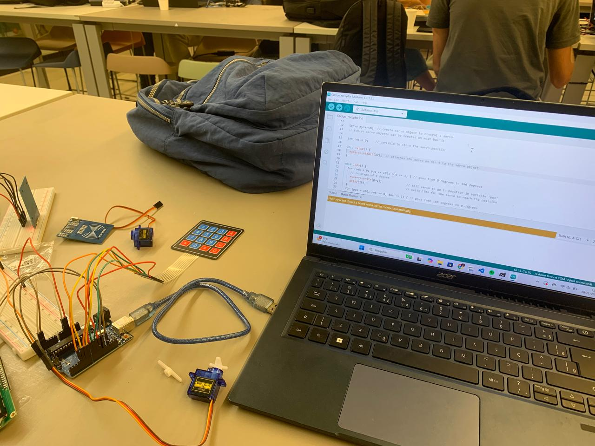
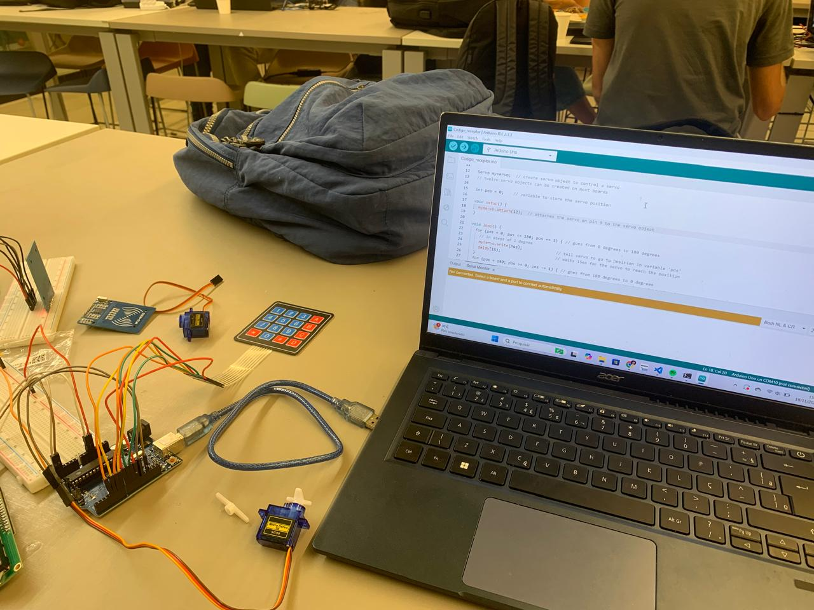

Projeto - Tech Design
No momento o projeto não possui um nome.
O projeto consiste em uma caça ao tesouro pela praça do Marco Zero, no qual equipes receberão um objeto guia para encontrar pelo local o tesouro escondido. A brincadeira foi desenvolvida para crianças e tem por sua missão promover o contato cultural da criança com a cidade, de modo a criar raizes afetivas com a cultura local por meio de uma brincadeira. A ludicidade da caça ao tesouro possibilita a conexão do conteúdo escolar com a prática, através da proposição de uma vivência. A brincadeira se inicia após o recebimento de um objeto guia, que consiste em um dispositivo tecnológico que quando se aproxima do tesouro expõe a cor vermelha , verde para distância média e azul para longe. Após o encontro do baú do tesouro, a equipe em posse de um cartão digital deverá colocar no lugar indicado do baú para liberar a digitação da senha. A senha consiste em uma pergunta relacionada ao conteúdo vivenciado em sala de aula. Após destravar o baú, a equipe terá posse do tesouro e deverá depositar no local de início.

 
